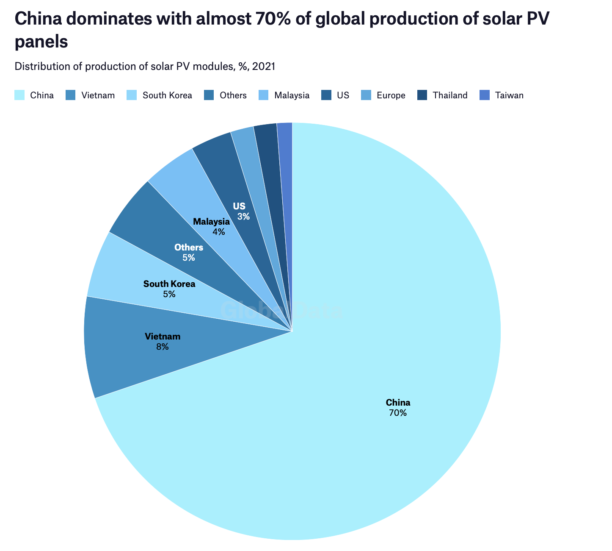
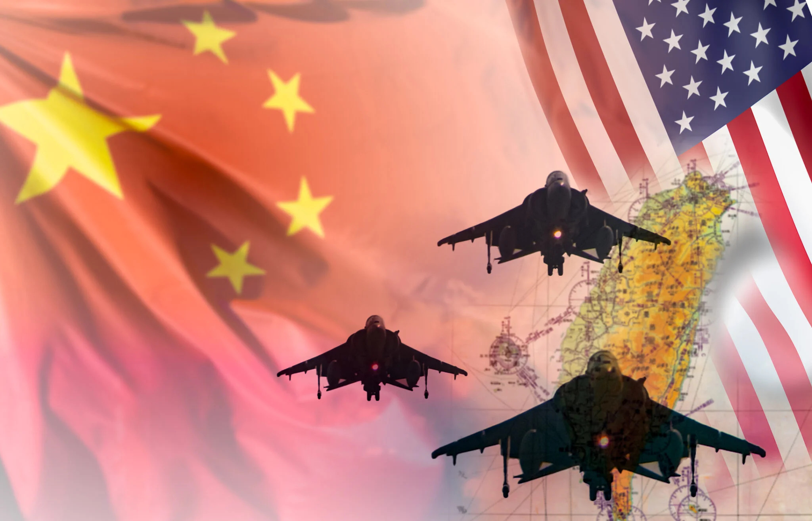

China and US relationship are constantly discussed regarding ideology, economic, international dominance and leadership. However, a more important topic that is closely tied with China-US relationship is Climate Change. China and the United States are the two biggest emission countries, as well as the two biggest economic bodies in the world. Their input and decision will greatly influence the direction of humanity in protecting our environment.
The Paris agreement, with support from almost every country, set the goal as transition to net-zero emission by 2050, and control the rise of temperature within 1.5 degree Celsius. However, many reports and signs show that although effects of the agreement are shown, the world will still be having trouble to control the rise of temperature within 1.5 degrees based on the current transition pace. This means the world needs to put more effort and attention on climate change. China and the US as world leaders are suffering from rising tension and vast uncertainty, causing them to not maximize the progress of climate transition. We’ve seen many interruptions like US’s withdrawal from the Paris Agreement during the Trump presidency and China’s refuse on continued cooperation on climate after Nancy Pelosi’s visit to Taiwan. Speaking of which, Taiwan issue has led to militarization on both sides, which is highly destructive to global climate. Thus it’s important to determine a solution to current China-US relationship.
China has dominance in the global supply chain, especially in the clean energy sector. China is the major producer of batteries, solar panel, and wind turbines. These parts and supplies are crucial to many green industry like electric vehicles, solar energy and storage, wind energy and storage, carbon capture and so on. And these industries happen to be the main support for humans to reduce emission by shifting their reliance on fossil fuels to clean energy. In a cooperation relationship, US and its allies will be able to access China’s supply chain to help with their energy transition and greatly reduce emission. Without China’s supply chain, energy transition will be much harder and expensive, because other suppliers won’t be able to provide sufficient amount of supplies, and starting their own manufacturing is going to require a lot of investment and input.
To solve the militarization caused by Taiwan issue in favor of climate, an agreement must be reached, so no more military will be needed for potential violent take over or defense. The conflict between China and Taiwan is essentially a competition between China and the US. Cooperation, then, is the only way to counter. A more peaceful and diplomatic approach can be used to solve the disagreement on Taiwan. In this way, more resources and money can also be saved to be invested in to the fight against Climate Change.
Only a cooperative relationship between China and the US can bring the two together to assess the current situation with shared information, and come up with a set of plans and methods to sustain the fight against climate change. The success in ozone layer protection would be impossible without the 1987 Montreal protocol. The Montreal protocol has the participation of both the US and USSR. The biggest progresses made on climate transition are also under the guidance of the Paris Agreement. The Paris Agreement also happened, because of a political agreement between China and the US a year prior. This shows the importance of cooperation in the long run since all the major progress is encouraged by agreements and contribution to global policies.
Gordon, Oliver. “Could a Chinese Invasion of Taiwan Derail the Net-Zero Transition?”
Gordon, Noah J. “Why US-China Rivalry Can Actually Help Fight Climate Change.”
Inwood, Joshua F. J., and James A. Tyner. “Militarism and the Mutually Assured Destruction of Climate Change.”